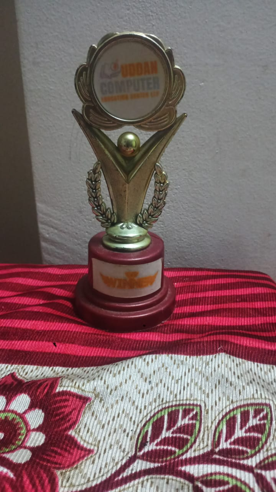
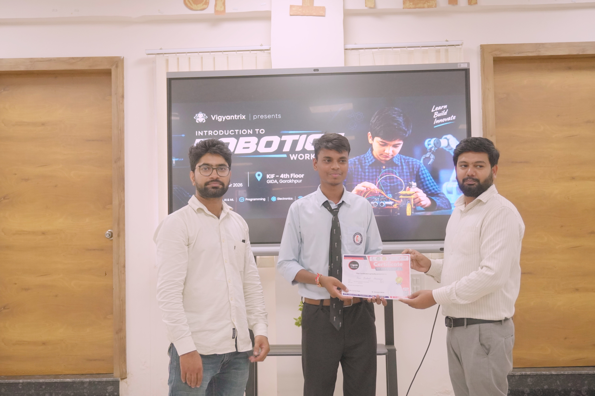
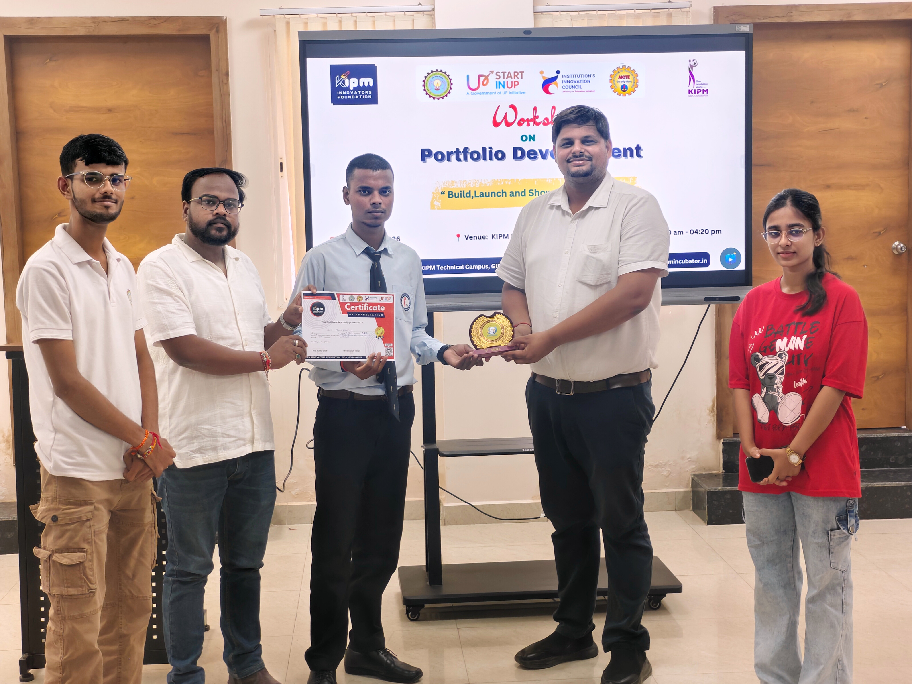

What I'm exploring
- Performance marketing and Meta Ads
- Lead generation and customer acquisition
- Computer science basics and C programming
- Digital products, startups and business strategy
Student, marketer and builder
I'm a Computer Science student and digital marketing enthusiast interested in performance marketing, lead generation and business growth. I enjoy combining creative ideas, data and technology to build useful digital experiences.
My interests sit between technology, marketing and entrepreneurship. I'm building my technical foundation while applying what I learn to campaigns, digital projects and collaborative startup work.
I value experimentation, clear communication, research and continuous learning. I aim to understand the problem first, test practical ideas, and improve based on feedback and data.
Building a foundation in computing while continuing to learn about marketing, business and emerging technology.
KIPM College of Engineering & Technology, Gorakhpur, Uttar Pradesh
Interests: programming, artificial intelligence, technology and digital business.
Janta Inter College, Ramkola, Kushinagar, Uttar Pradesh
Score: 70%
MDS Public School, Basdila, Kushinagar, Uttar Pradesh
Score: 91%
Experience across digital promotion, audience research, lead generation, sales communication and startup marketing.
Worked with Richind to promote online courses. It helped me practise audience analysis, customer engagement, objection handling and persuasive communication.
Reported milestone: approximately ₹50,000 in affiliate income. Results can vary; this reflects my own past experience.
Selected digital work that brings together personal branding, marketing and practical web development.
A personal portfolio and service website that presents my skills, services, feedback and work in one place, giving prospective clients and collaborators a clear digital identity.
Visit live websiteThis portfolio shows my learning in HTML and CSS, responsive design, content organization and publishing a website online.
Explore GitHubA growing mix of marketing, business, communication and technical skills, developed through study and hands-on practice.
A few competition and learning milestones from my academic and professional journey.

Uddan Computer Education Center, Ramkola.

Recognition during my school journey.

College competition conducted by Vigyantrix.

Progress achieved through learning and campaign execution.

Awarded by RichINd founder Yash Kulshetra.

Recognition for portfolio creation and deployment, awarded by Honourable Nitesh sir and Puneet sir.
For collaborations, marketing projects, or conversations about technology and business, feel free to reach out.